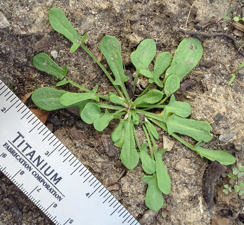
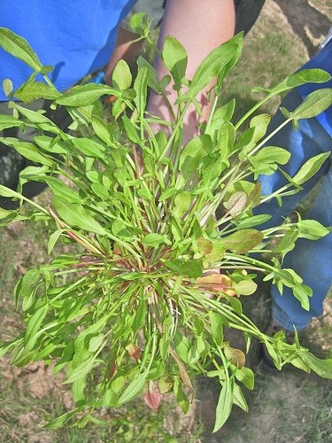
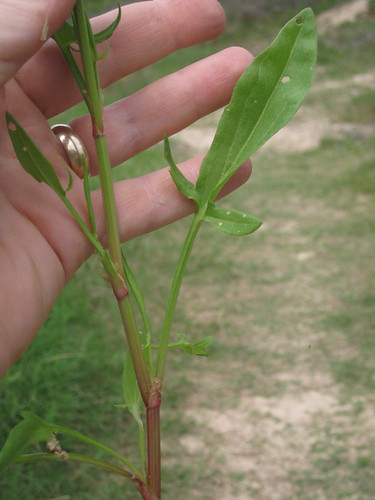
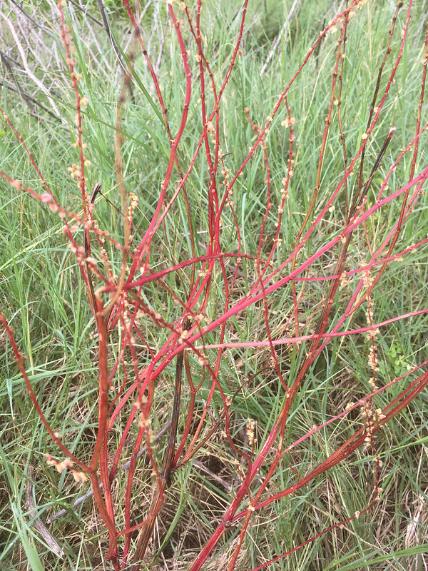
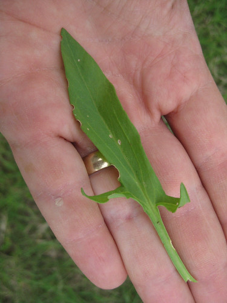
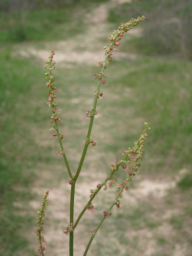
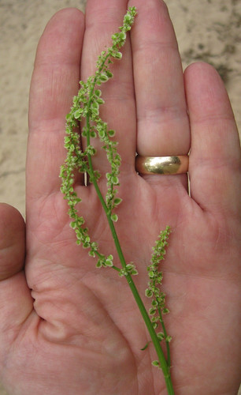
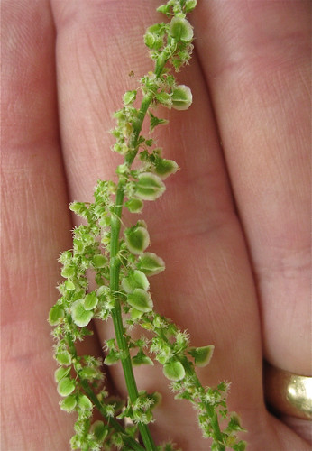
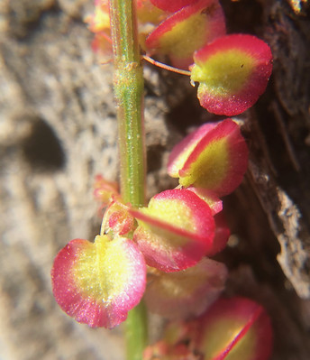

Sheep Sorrel
Scientific Name(s): Rumex acetosella
Abundance: common
What: leaves, seeds
How: young leaves raw, older leaves cooked; seeds toasted then threshed
Where: sunny fields
When: spring
Nutritional Value: vitamins, minerals, protein and carbohydrates in seeds
Dangers: oxalic acid
Medicinal Summary:
Leaves - soothes nasal inflammations; reduces bronchitis (tisane)
Very young sheep sorrel plant.

Slightly older sheep sorrel plant

Mature sheep sorrel leaf and stalk.

Sheep sorrel stems and seedpods turn red as they approach the end of their life.

Close-ups of sheep sorrel leaves. They can vary quite a bit in width.


Sheep sorrel seedheads.

Close-ups of immature sheep sorrel seeds.


Mature Sheep sorrel seedpods turning red.

Sheep sorrel is found around the blue building.
In early winter rosettes of arrowhead-shaped leaves appear in open, sunny fields. These small, early plants quickly grow into large clumps of taste, sour leaves. The seed stalks and mature seeds have a reddish color and since usually grow among many brother/sister plants by late winter/early spring fields with sheep sorrel will have a very distinctive reddish hue.
Look for the arrowhead-shape leaves of sheep sorrel in early spring. By April in Houston the plant will have already gone to seed. The young leaves have a tangy, lemon flavor that is excellent raw by itself or added to salads. In Poland a delicious "Cream of Sorrel" soup is made with wine, cream, garlic, butter, and assorted other stuff. A similar soup can be made by adding chopped sheep sorrel leaves to a can of cream of mushroom soup plus a dash of wine. Don't tell your Polish cook friends this as they get rather touchy over it. :-/